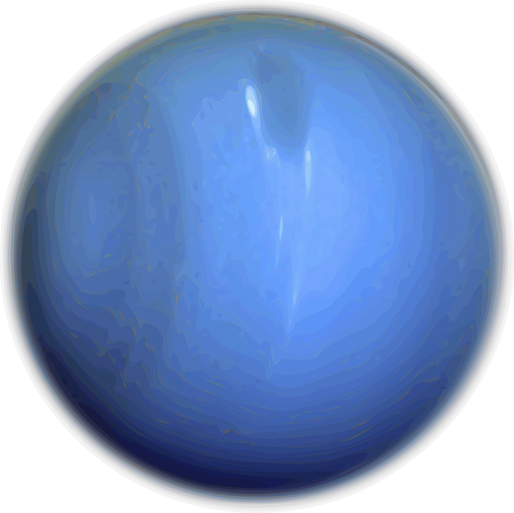
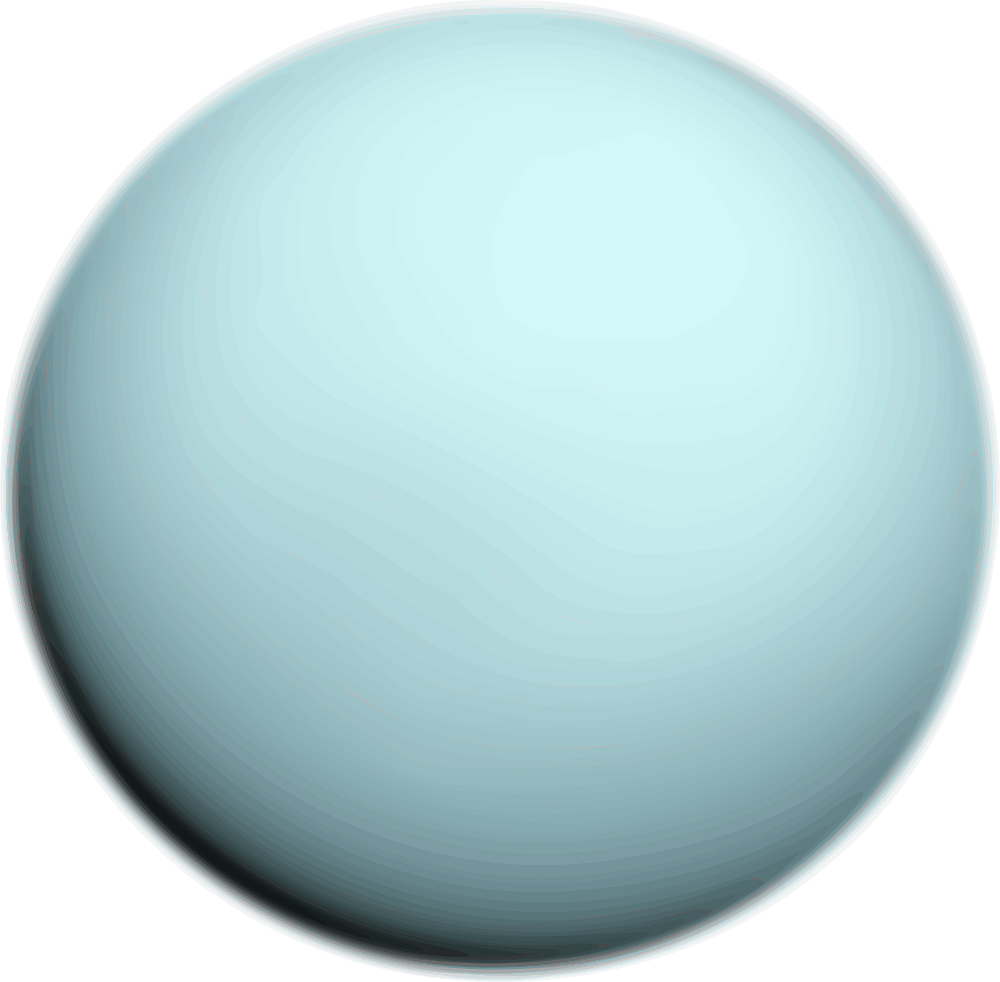
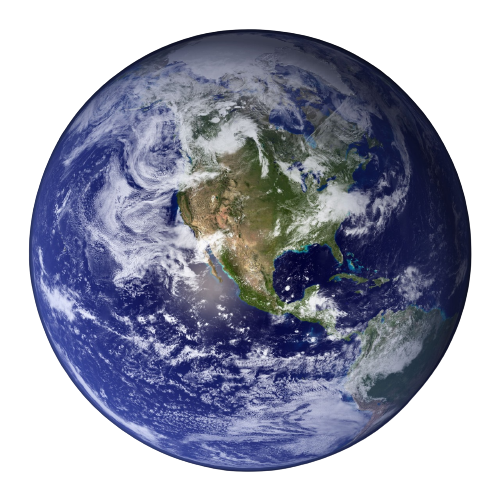
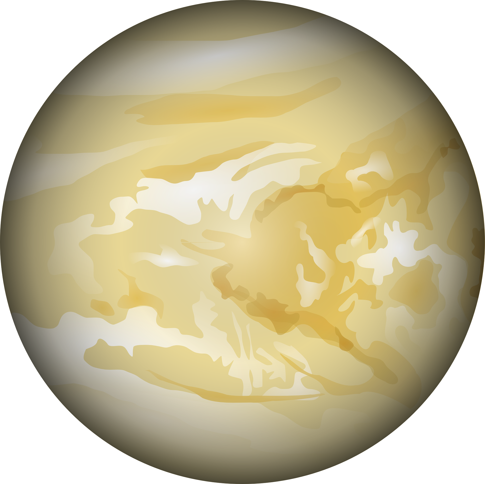

Your browser does not support the video tag.
Logged in as {{ user['username'] }}
Welcome {{ user['firstname'] }}!
Explore the solar system!
Click/hover on a planet
to get started
Logout
Profile



